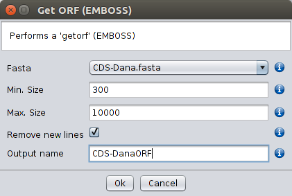

Many transcriptomes are not annotated, preventing the easy retrieval of coding sequences for phylogenetic and evolutionary comparative studies. The Get ORF (EMBOSS) option under Operations retrieves all ORFs that start with a Methionine and that are longer and shorter than the lengths specified by the user. This option can also be used with non-annotated genomes, when the genes to be annotated are known (or assumed) to be intronless. The resulting file will be saved in the /fasta/nucleotides folder that is located in the specified repository folder, and thus can be used in further operations such as Blast analyses. When the Remove new lines checkbox is selected the sequences in the resulting file will not be fragmented. The Get ORF (EMBOSS) option can also be selected by double clicking the right mouse button on top of a FASTA file.

Get ORF (EMBOSS)n